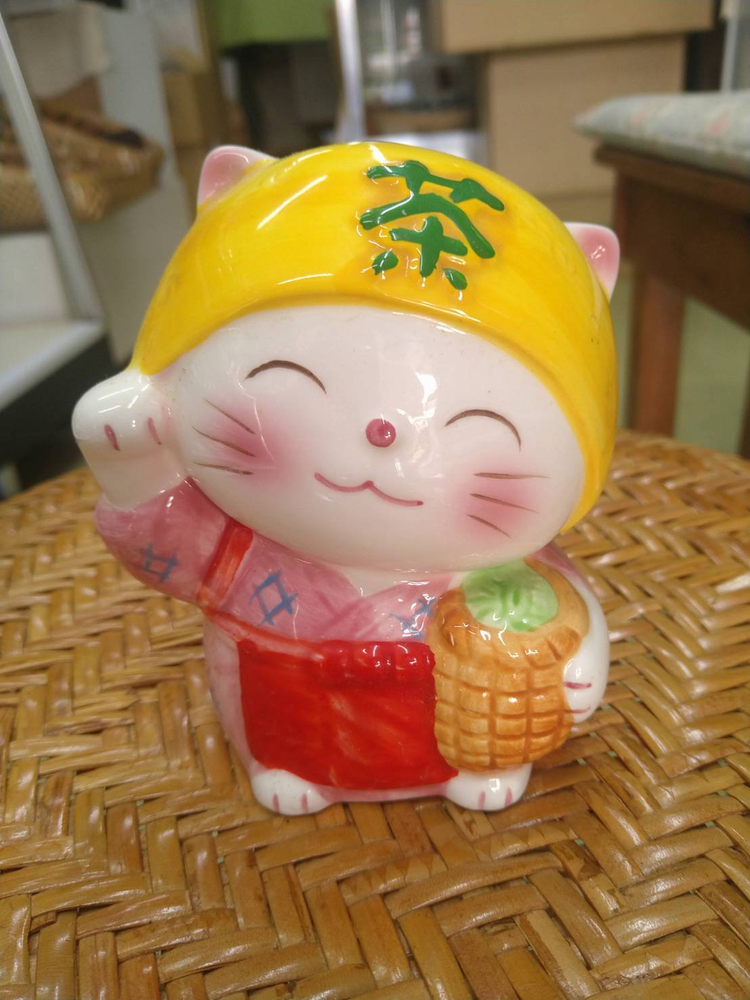
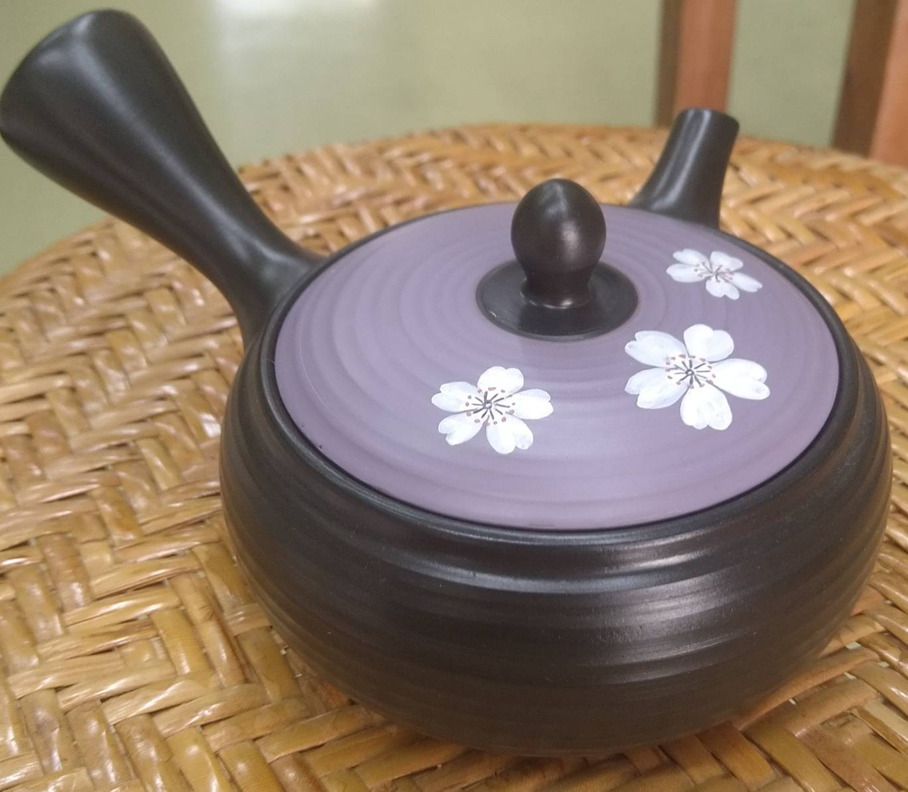
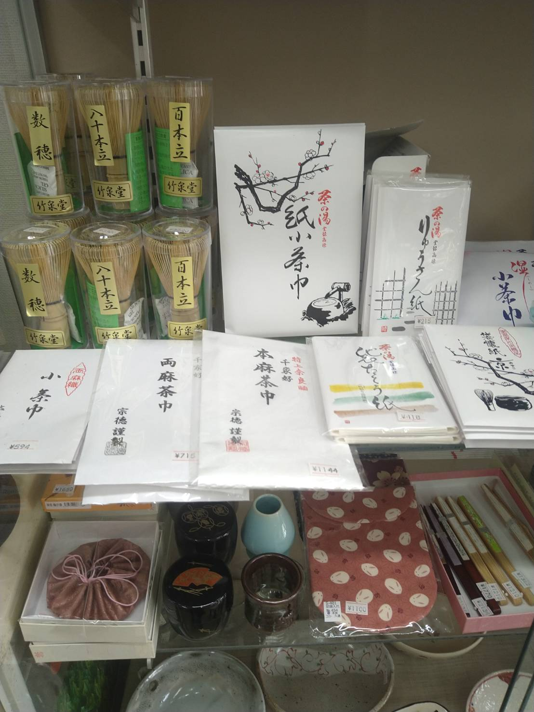

ABOUT US ／ 昭和42年創業
ABOUT US ／ 쇼와 42년（1967년）창업

歴史
역사
お茶の築城園は、昭和42年（1967年）に長崎県対馬市厳原町で創業した、お茶の専門店です。「小さなお店ではありますが」と私たちは言いますが、半世紀以上にわたって対馬の皆さまに愛され続けてきたことが、私たちの誇りです。
産地直送の日本茶を中心に、お茶請けのおいしいお菓子、急須や湯飲みなどの茶器・陶器まで。「ほっとする一杯」を届けるために、今日もお店を開けています。
오차노 치쿠죠엔은 쇼와 42년（1967년）에 나가사키현 쓰시마시 이즈하라마치에서 창업한 차 전문점입니다. '작은 가게이지만'이라고 저희는 말하지만, 반세기 이상에 걸쳐 쓰시마 여러분께 사랑받아 온 것이 저희의 자랑입니다.
산지 직송 일본차를 중심으로, 차와 함께 먹는 맛있는 과자, 다관이나 찻잔 등의 다기·도자기까지. '따뜻하게 쉬어가는 한 잔'을 전하기 위해 오늘도 가게 문을 열고 있습니다.

こだわり
고집
築城園がこだわるのは、産地直送のおいしいお茶。八女（福岡）・嬉野（佐賀）・知覧（鹿児島）など、日本を代表するお茶の産地から直接仕入れることで、鮮度と品質にこだわった本物の味をご提供しています。
また、何gからでも量り売りいたします。「少し試してみたい」「いろんな産地を飲み比べたい」というお客様のご要望にも、お気軽にお応えします。
치쿠죠엔이 고집하는 것은, 산지 직송의 맛있는 차. 야메（후쿠오카）・우레시노（사가）・치란（가고시마）등, 일본을 대표하는 차 산지에서 직접 매입함으로써, 신선도와 품질에 고집한 진짜 맛을 제공합니다.
또한, 몇 그램이든 무게 판매합니다. '조금 맛보고 싶다', '여러 산지를 비교해보고 싶다'는 손님의 요청에도 편하게 응하고 있습니다.

お菓子・茶器
과자・다기
お茶専門店ならではの充実した菓子コーナー。炭焼珈琲寒天ゼリーやプチようかん詰め合わせなど、スーパーでは出会えない本格的なお茶請けのお菓子を豊富にご用意しています。
急須・湯飲みなどの茶器や陶器、茶道具も取り揃えています。ご自宅で使うものから、贈り物まで、ぜひ直接見てお選びください。
차 전문점만의 풍성한 과자 코너. 숯불 커피 한천 젤리나 미니 양갱 모둠 등, 슈퍼마켓에서는 만나기 어려운 본격적인 차 과자를 풍부하게 준비하고 있습니다.
다관·찻잔 등의 다기와 도자기, 다도구도 갖추고 있습니다. 가정용부터 선물까지, 꼭 직접 보고 골라가세요.